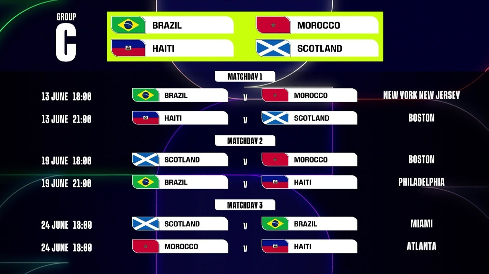

A Copa do Mundo de 2026 promete ser a maior e mais emocionante edição da história do futebol. Com seleções
de todos os continentes reunidas em busca da glória máxima, cada partida será um capítulo decisivo de uma
competição que movimenta bilhões de torcedores ao redor do planeta. E para não perder nenhum momento dessa
caminhada épica, acompanhar o calendário oficial dos jogos é fundamental.
Desde a abertura do torneio até a grande final, cada data representa uma nova oportunidade de viver emoções
inesquecíveis. A fase de grupos traz confrontos repletos de expectativa, enquanto as fases eliminatórias
elevam a tensão a cada minuto. É nesse percurso que surgem as grandes surpresas, os heróis improváveis e os
jogos que ficam eternizados na memória dos fãs. O calendário permite acompanhar toda essa trajetória,
organizando cada duelo e destacando os momentos mais aguardados da competição.
Para a torcida brasileira, cada partida da Seleção será acompanhada com a paixão que sempre marcou nossa
história nas Copas do Mundo. A expectativa cresce a cada rodada, os sonhos se renovam a cada vitória e a
esperança de conquistar mais uma estrela ilumina o caminho rumo ao título. Fique atento às datas, horários e
locais dos confrontos, porque a contagem regressiva para o maior espetáculo do futebol mundial já começou, e
cada jogo pode ser o início de uma nova página gloriosa na história do esporte.